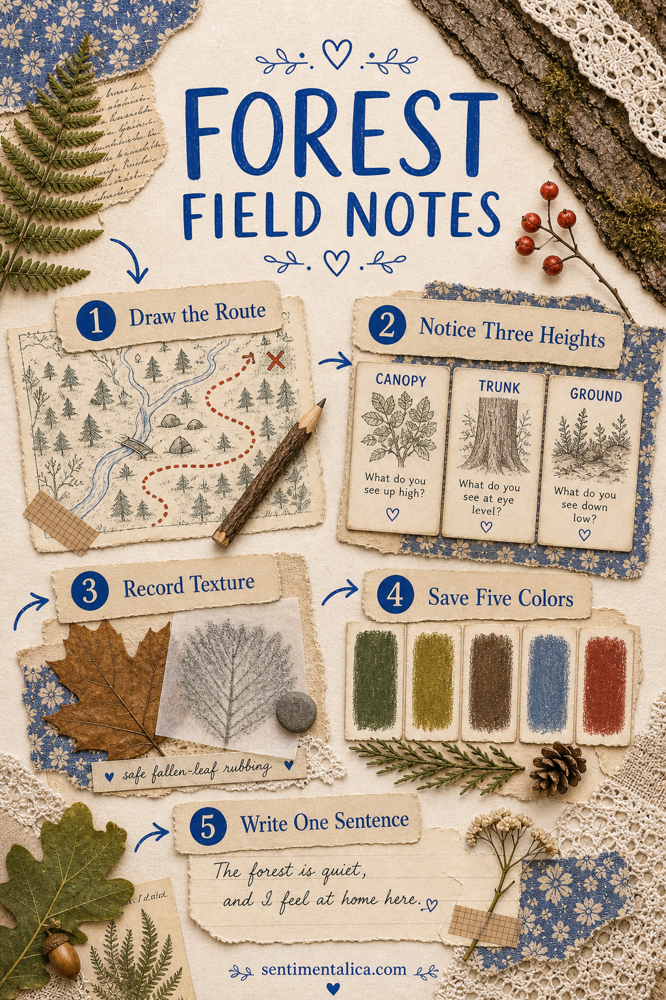
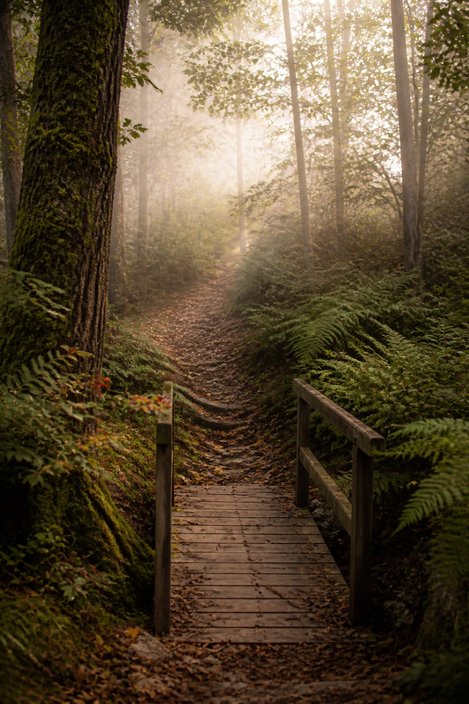

A forest journal does not need to identify every tree or look like a perfect botanical archive. It can begin with one walk and a few things you genuinely noticed: the direction of the path, a sound above you, bark under your fingers, and the place where the light changed.
This field-notes method gives the walk a simple structure without turning it into homework. Bring a pencil and one folded sheet, or make quick notes on your phone. Collect only what is legal, abundant, already fallen, and safe to handle.

Draw the route before the details fade
Your map can be a curved line between three landmarks: the gate, the stream, and the fallen tree. Mark where you stopped or turned around. Accuracy matters less than remembering how the place unfolded as you moved through it.
Add the date, approximate time, and weather. These small facts will later explain why the path was muddy, why a bird was active, or why the whole forest looked unusually blue.
Choose three kinds of observation
Record one thing from above, one at eye level, and one near the ground. You might notice moving branches, lichen on a trunk, and a beetle trail through leaf litter. Changing your viewing height makes an ordinary walk feel much richer.
Write what you can actually see before reaching for a name. “Five pale cups on dark moss” is a useful note even if you cannot identify the fungus. You can research later, and uncertainty can remain honestly on the page.

Make texture rubbings without harming the place
Use loose bark already on the ground, a dry leaf, or a weathered wooden sign where rubbing is permitted. Place thin paper over the texture and move a soft pencil sideways. Never strip bark, pick protected plants, or disturb living moss for a journal page.
If touching is not appropriate, describe the texture in two words or photograph it. Ridged silver, damp velvet, cracked rust, and papery brown can become both memory and color direction.
Keep a five-color forest record
Look beyond generic green. Choose a dark shadow, a clean light, two middle colors, and one small accent. On a wet walk this might be charcoal bark, fog cream, fern, clay, and a surprising berry red.
Add small swatches beside your notes using pencil, paint, thread, or paper. The palette will make later scrapbook layers feel connected to the actual place rather than to a ready-made forest theme.
Write one sentence the photograph cannot hold
Finish with a sensory truth: “The path became quiet after the bridge,” or “Rain stayed in the leaves long after the sky cleared.” One specific sentence brings the page closer to memory than a long polished description.
A field-notes journal becomes personal when observation comes before decoration.
A simple spread to make at home
- Left page: draw the route and place one photograph beside it.
- Top right: list your three observations at different heights.
- Center right: add a rubbing, texture description, or small tracing-paper layer.
- Bottom: place five color marks and the sentence you saved.
Leave room to add an identification later, but do not make certainty the price of finishing. The page has already done its job if it returns you to the air, pace, and attention of the walk.
Find more gentle ways to journal a place in the Sentimentalica journal.